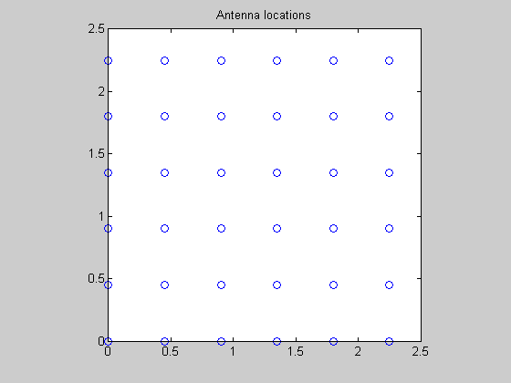
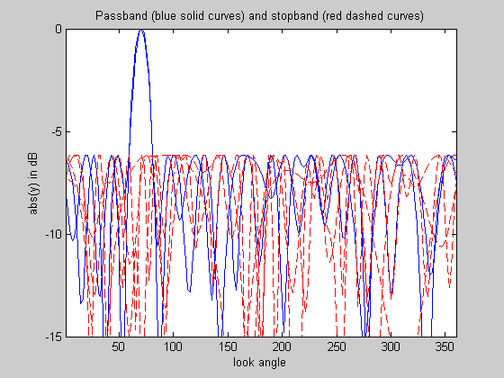
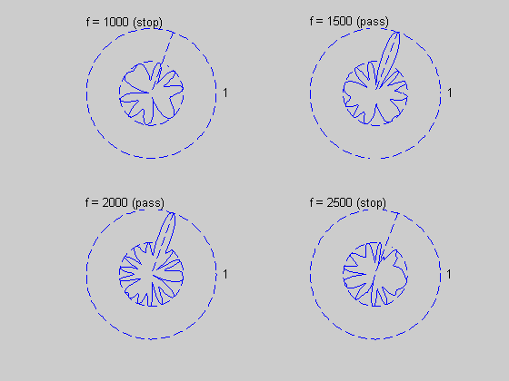

Minimize sidelobe level of an FIR broadband far-field antenna array
ARRAY_GEOMETRY = '2D_UNIFORM_LATTICE';
P = 2;
fs = 8000;
T = 1/fs;
c = 2000;
theta_tar = 70;
half_beamwidth = 10;
f_low = 1500;
f_high = 2000;
if strcmp( ARRAY_GEOMETRY, '2D_RANDOM' )
rand('state',0);
n = 20;
L = 0.45*(c/f_high)*sqrt(n);
loc = L*rand(n,2);
elseif strcmp( ARRAY_GEOMETRY, '2D_UNIFORM_LATTICE' )
m = 6; n = m^2;
d = 0.45*(c/f_high);
loc = zeros(n,2);
for x = 0:m-1
for y = 0:m-1
loc(m*y+x+1,:) = [x y];
end
end
loc = loc*d;
else
error('Undefined array geometry')
end
numtheta = 180;
numfreqs = 6;
theta = linspace(1,360,numtheta)';
freqs = linspace(500,3000,numfreqs)';
clear Atotal;
for k = 1:numfreqs
Afir = kron( ones(numtheta,n), -[0:P-1]/fs );
Alocx = kron( loc(:,1)', ones(1,P) );
Alocy = kron( loc(:,2)', ones(1,P) );
Aloc = kron( cos(pi*theta/180)/c, Alocx ) + kron( sin(pi*theta/180)/c, Alocy );
Atotal(:,:,k) = exp(2*pi*i*freqs(k)*(Afir+Aloc));
end
inbandInd = find( freqs >= f_low & freqs <= f_high );
outbandInd = find( freqs < f_low | freqs > f_high );
thetaStopInd = find( theta > (theta_tar+half_beamwidth) | ...
theta < (theta_tar-half_beamwidth) );
[diffClosest, thetaTarInd] = min( abs(theta - theta_tar) );
Atar = []; As = [];
for k = [inbandInd]'
Atar = [Atar; Atotal(thetaTarInd,:,k)];
As = [As; Atotal(thetaStopInd,:,k)];
end
for k = [outbandInd]'
As = [As; Atotal(:,:,k)];
end
cvx_begin
variable w(n*P) complex
minimize( max( abs( As*w ) ) )
subject to
Atar*w == 1;
cvx_end
disp(['Problem is ' cvx_status])
if ~strfind(cvx_status,'Solved')
return
end
fprintf(1,'The minimum sidelobe level is %3.2f dB.\n\n',...
20*log10(cvx_optval) );
figure(1); clf;
plot(loc(:,1),loc(:,2),'o')
title('Antenna locations')
axis('square')
figure(2); clf;
clr = { 'r' 'r' 'b' 'b' 'r' 'r' };
linetype = {'--' '--' '-' '-' '--' '--'};
for k = 1:numfreqs
plot(theta, 20*log10(abs(Atotal(:,:,k)*w)), [clr{k} linetype{k}]);
hold on;
end
axis([1 360 -15 0])
title('Passband (blue solid curves) and stopband (red dashed curves)')
xlabel('look angle'), ylabel('abs(y) in dB');
hold off;
figure(3); clf;
bw = 2*half_beamwidth;
subplot(2,2,1); polar_plot_ant(abs( Atotal(:,:,2)*w ),theta_tar,bw,'f = 1000 (stop)');
subplot(2,2,2); polar_plot_ant(abs( Atotal(:,:,3)*w ),theta_tar,bw,'f = 1500 (pass)');
subplot(2,2,3); polar_plot_ant(abs( Atotal(:,:,4)*w ),theta_tar,bw,'f = 2000 (pass)');
subplot(2,2,4); polar_plot_ant(abs( Atotal(:,:,5)*w ),theta_tar,bw,'f = 2500 (stop)');
Calling SDPT3: 3184 variables, 145 equality constraints
For improved efficiency, SDPT3 is solving the dual problem.
------------------------------------------------------------
num. of constraints = 145
dim. of socp var = 3180, num. of socp blk = 1060
dim. of free var = 4 *** convert ublk to lblk
*******************************************************************
SDPT3: Infeasible path-following algorithms
*******************************************************************
version predcorr gam expon scale_data
NT 1 0.000 1 0
it pstep dstep pinfeas dinfeas gap mean(obj) cputime
-------------------------------------------------------------------
0|0.000|0.000|9.2e+02|3.6e+02|6.3e+04|-1.673648e-10| 0:0:01| chol 1 1
1|0.983|0.978|1.6e+01|8.0e+00|1.1e+03|-1.649364e+01| 0:0:02| chol 1 1
2|1.000|0.992|7.6e-07|7.4e-02|3.1e+01|-1.574643e+01| 0:0:03| chol 1 1
3|1.000|0.961|7.0e-06|3.8e-03|1.2e+00|-6.175155e-01| 0:0:05| chol 1 1
4|1.000|0.219|5.7e-06|3.0e-03|9.8e-01|-5.374376e-01| 0:0:06| chol 1 1
5|0.799|0.293|1.3e-06|2.1e-03|7.0e-01|-4.953416e-01| 0:0:07| chol 1 1
6|0.576|0.326|9.6e-07|1.4e-03|4.6e-01|-4.986182e-01| 0:0:09| chol 2 1
7|0.814|0.350|9.0e-07|9.4e-04|2.5e-01|-5.186082e-01| 0:0:10| chol 1 1
8|0.898|0.334|3.1e-07|6.2e-04|1.5e-01|-5.181563e-01| 0:0:12| chol 2 2
9|1.000|0.735|3.4e-08|1.7e-04|4.8e-02|-4.912010e-01| 0:0:13| chol 1 2
10|0.556|0.750|2.6e-09|4.2e-05|2.2e-02|-4.866625e-01| 0:0:14| chol 2 2
11|0.722|0.702|5.4e-10|1.3e-05|7.9e-03|-4.896244e-01| 0:0:16| chol 2 2
12|0.598|0.665|3.4e-10|4.3e-06|3.6e-03|-4.906491e-01| 0:0:17| chol 2 2
13|0.752|0.787|2.1e-10|1.0e-06|1.2e-03|-4.914282e-01| 0:0:18| chol 2 2
14|0.764|0.767|4.6e-10|2.7e-07|3.5e-04|-4.917374e-01| 0:0:20| chol 2 2
15|0.525|0.886|3.0e-10|5.7e-08|1.8e-04|-4.917958e-01| 0:0:21| chol 2 2
16|0.814|0.939|3.6e-10|2.7e-08|4.6e-05|-4.918576e-01| 0:0:22| chol 3 3
17|0.913|0.854|1.4e-09|6.9e-09|7.9e-06|-4.918758e-01| 0:0:24| chol 3 3
18|0.566|0.895|1.4e-09|1.2e-09|4.1e-06|-4.918774e-01| 0:0:25| chol 4 3
19|0.555|0.943|1.9e-09|6.4e-10|2.2e-06|-4.918783e-01| 0:0:27| chol 4 4
20|0.542|0.943|1.9e-09|4.2e-10|1.2e-06|-4.918787e-01| 0:0:28| chol 3 4
21|0.540|0.943|2.0e-09|4.3e-10|6.5e-07|-4.918790e-01| 0:0:29| chol 4 4
22|0.542|0.943|1.4e-09|4.4e-10|3.6e-07|-4.918791e-01| 0:0:31| chol 4 4
23|0.544|0.943|1.3e-09|3.2e-10|2.0e-07|-4.918792e-01| 0:0:32| chol 4 5
24|0.547|0.942|1.1e-09|2.8e-10|1.1e-07|-4.918793e-01| 0:0:33| chol 4 6
25|0.549|0.942|1.1e-09|2.5e-10|5.8e-08|-4.918793e-01| 0:0:35| chol 6 6
26|0.551|0.943|1.2e-09|2.4e-10|3.2e-08|-4.918793e-01| 0:0:36| chol 6 5
27|0.553|0.943|1.2e-09|2.5e-10|1.7e-08|-4.918793e-01| 0:0:38|
stop: max(relative gap, infeasibilities) < 1.49e-08
-------------------------------------------------------------------
number of iterations = 27
primal objective value = -4.91879292e-01
dual objective value = -4.91879305e-01
gap := trace(XZ) = 1.71e-08
relative gap = 8.61e-09
actual relative gap = 6.85e-09
rel. primal infeas = 1.17e-09
rel. dual infeas = 2.51e-10
norm(X), norm(y), norm(Z) = 6.7e-01, 7.0e+00, 2.0e+01
norm(A), norm(b), norm(C) = 3.9e+02, 2.0e+00, 3.0e+00
Total CPU time (secs) = 37.6
CPU time per iteration = 1.4
termination code = 0
DIMACS: 1.2e-09 0.0e+00 3.8e-10 0.0e+00 6.9e-09 8.6e-09
-------------------------------------------------------------------
------------------------------------------------------------
Status: Solved
Optimal value (cvx_optval): +0.491879
Problem is Solved
The minimum sidelobe level is -6.16 dB.
  